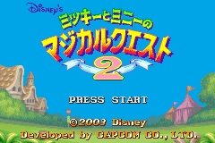

Mickey to Minnie no Magical Quest 2 (Japan)
EEPROM 4K gbakit Built-In Debug Menu Patch 🎮 Button Cheat VRAM Tile Sheet 💾 MultiBoot 🎮 4P Link
Cartridge Identity
- Game Code
A29J(FamilyA29)- Header Title
M&M MAGICAL2- Maker / Revision
08/ rev0- ROM Size
- 4.0 MiB (4,194,304 B)
- Save Media
EEPROM 4K- SHA-256
b96b203aecf901463a9cb00c8999def15c52fd4ae65907a03db9960d1a545ede- Engine / SDK Group
comm-040(4 families)
Screenshots

Debug Menu Re-Enablement Patch (.ips)
Download A29J-debug.ips (15 B IPS / 2 B delta)
- Hook Mechanism
thumb_imm_scene_override· Patch scene dispatcher at 0x0800698c (movs r0, #0 -> movs r0, #20) to select Capcom test mode menu slot 10 (0x0801996d)- IPS SHA-256
87150958c335d6a318841971efd9a2cd7efd3637db38479ce3f1e1427ef989ac
gbakit patch apply A29J-debug.ips original.gba patched-debug.gba
Verified Button-Combo Cheat
Zero-patch retail controller cheat (Wave 3): 4-way counterfactually verified in headless
libmgba. See all verified titles in the Button-Combo Cheats Catalog.
- Effect
- Hidden Controller Sequence Unlock (ROM table 0x0806eb1c)
- Button Sequence
DOWN, A, B, SELECT, START, RIGHT, LEFT, UP, R, L- Verification Verdict
- RAM Unique Reaction
- Target RAM Address
0x03000012- ROM Table Address
0x0806eb1c- Timing Protocol
boot=360f,hold=6f,release=6f,settle=60f- Activation Indicator
- Headless libmgba 4-way counterfactual verified: unique IWRAM/EWRAM state transition distinct from control, wrong, and reversed inputs
gbakit cheat verify A29JLink Cable & Multiplayer Communications
This title contains detected communication capabilities: 💾 MultiBoot 🎮 4P Link.
Detailed protocol specifications, SIO registers, Joybus commands, and MultiBoot sequences are documented in the Link & Multiplayer Reference.
- Multi-Player SIO (4P)
- 16-bit ring network · SIOCNT (
0x04000128) literals:0x008794,0x008918,0x008998· SIODATA32/SIOMULTI0 (0x04000120) literals:0x008910 - Single-Cart MultiBoot
- Single-Cartridge MultiBoot (Download Play) client/server handler · Thumb SWI 0x25 (
0xDF25):0x0f815c,0x12c2be,0x20c172,0x2165fa
Battery Save Support in gbakit
Built-in definition (A29J)
gbakit save verify A29J save.sav
gbakit save decode A29J save.sav
gbakit save fix A29J damaged.sav -o repaired.savROM Assets, Compression & Audio
- BIOS Compression
- LZ77 (
0x10): 0 streams · RLE (0x30): 0 streams - ROM Pointer Tables
- 35 tables (0 pointing to validated compressed streams)
- SDK Backup Tags
EEPROM_V122- VRAM / Palette Snapshot
- 1,071 non-zero 8×8 tiles · 22 palettes · Direct ROM matches: 26 VRAM blocks, 0 palette blocks

Text, Fonts & Scene Data
- Primary Text Encoding
- 16-bit / UTF-16LE text (
14ASCII strings ·2Shift-JIS runs) - Font & VWF Indicators
- VWF Width Table 1bpp Font · BIOS SWIs: BitUnPack
0x10:9· LZ770x11/12:9· Huffman0x13:5· RLE0x14/15:8 - Scene & Packaging
33ROM pointer tables (≥32 entries,4≥200) ·1relativeu32TOCs ·133OAM metasprite hits
Hardware MMIO Subsystems
ppu_display0x8006ae8,0x800f238